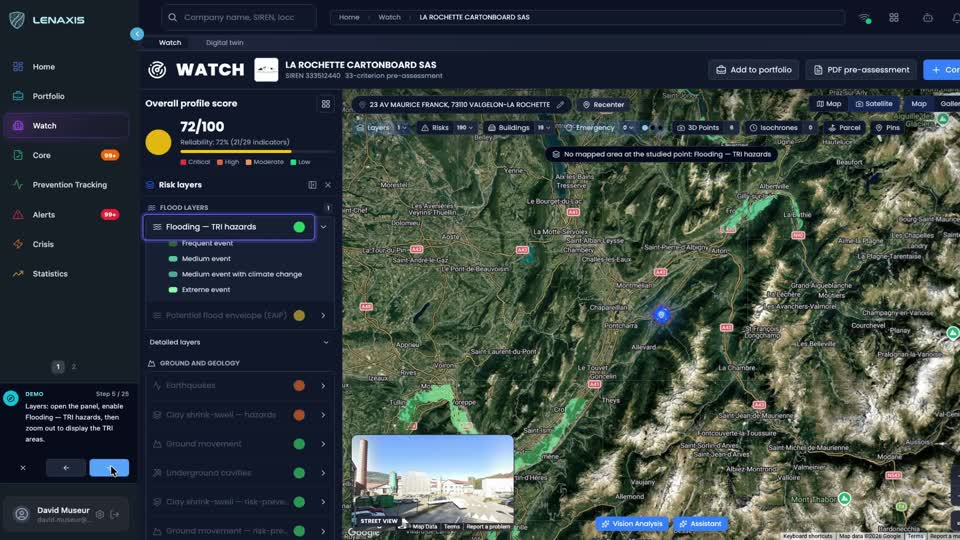
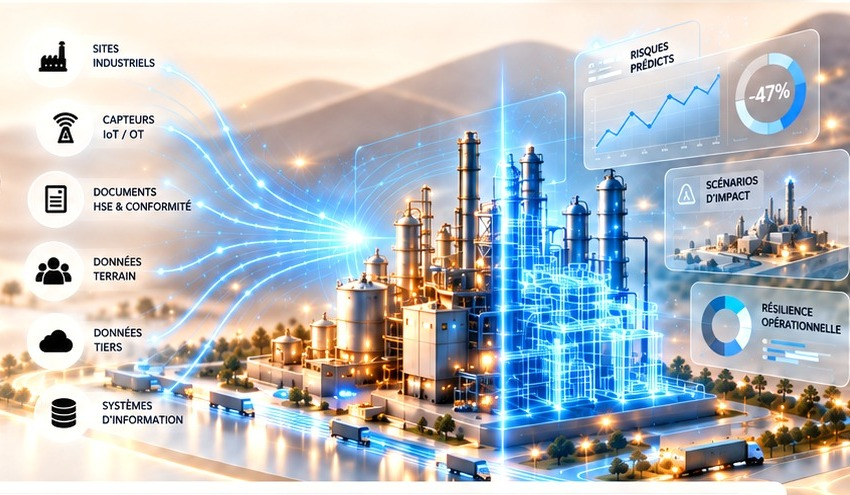
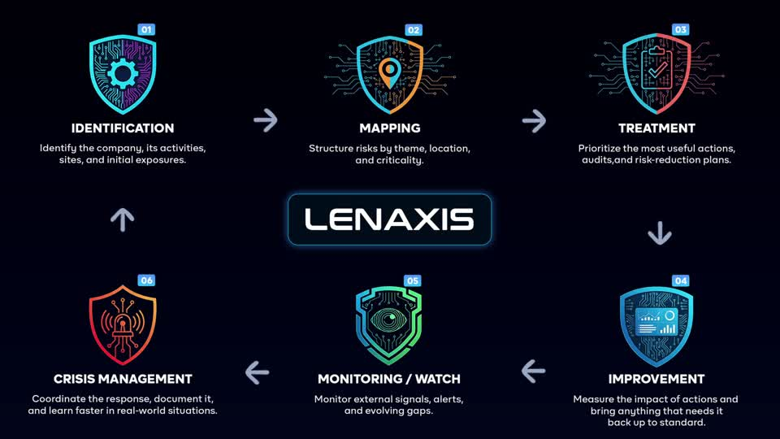
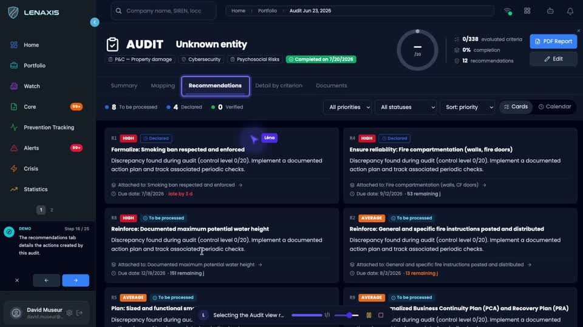
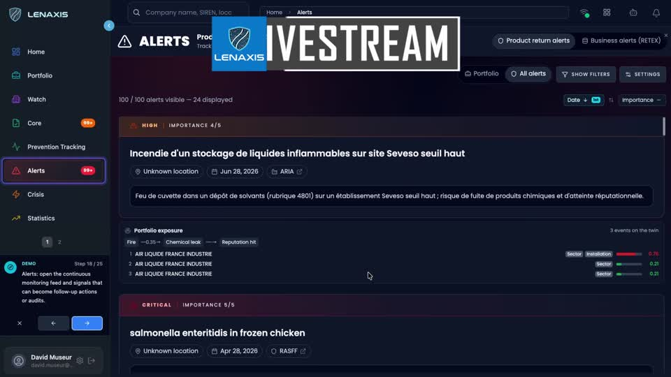

Reliez sites, actifs et dépendances dans un même référentiel.


LENAXIS transforme les données terrain en intelligence du risque pour des opérations plus sûres, plus résilientes et plus performantes.
Votre experte IA
du risque industriel




Découvrez les 10 modules natifs, les fonctions transversales et l’assistant LÉNA. Chaque solution s’appuie sur le même contexte de risque.
Un référentiel commun pour comprendre les expositions et les dépendances de chaque site.
Découvrir COREUne veille rapprochée de vos sites pour donner un contexte concret à chaque signal.
Découvrir WATCHDes constats structurés et des preuves reliées aux actions de prévention.
Découvrir AUDITUne évaluation explicite pour hiérarchiser les risques et expliquer les arbitrages.
Découvrir MATRIXUne lecture des tendances pour comparer les situations et éclairer la prévention.
Découvrir STATSUne lecture organisée des événements qui appellent une vérification ou une action.
Découvrir ALERTSL’expertise à distance reliée au dossier de risque et aux constats terrain.
Découvrir LIVESTREAMUn contexte partagé pour coordonner les équipes et conserver la trace des décisions.
Découvrir CRISISUne vision consolidée pour passer des constats aux priorités de pilotage.
Découvrir DASHBOARDLa prévention du risque routier dans la même démarche que les autres risques de l’entreprise.
Découvrir FLOTTEDes événements documentés pour comprendre les causes et suivre la prévention.
Découvrir ATDes droits et un cadre de travail adaptés à l’organisation et à ses intervenants.
Découvrir ADMINInterrogez les informations de risque pour préparer une décision, une visite ou un document.
Découvrir Application LÉNAIdentifier, cartographier, évaluer, traiter, suivre et gérer la crise dans une démarche commune.
Les sites, actifs et dépendances donnent un cadre aux informations de veille et aux constats terrain.
Explorer CORELes preuves, recommandations et actions permettent de préparer les visites et de suivre les écarts.
Explorer AUDITLes informations du site et les plans utiles restent reliés à la coordination de crise.
Explorer CRISISLe périmètre se construit autour des sites, des activités et des usages de votre organisation.
Cartographie des expositions, équipements sensibles, protection incendie et préparation de crise.
Visites terrain, preuves de prévention, dépendances opérationnelles et continuité d’activité.
Dossiers de risque structurés, constats documentés, recommandations et partage avec les intervenants autorisés.
LENAXIS réunit les données de site, l’audit, la veille, l’évaluation et la gestion de crise. Son approche part des informations disponibles et des constats documentés pour préparer les décisions.
Risk Managers, équipes QHSE, directions, auditeurs et intervenants autorisés retrouvent un contexte cohérent pour travailler sur la prévention et la résilience.
Présentez vos sites, vos priorités et les documents que vous souhaitez exploiter. Nous définirons les usages et le périmètre adaptés.
Demander une démo